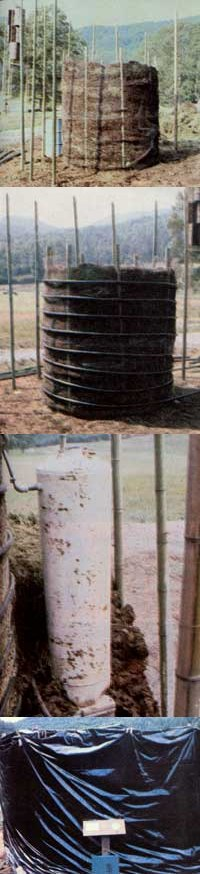
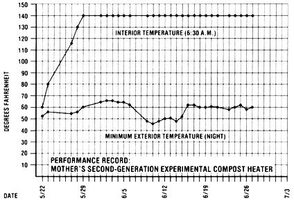

Mother's Compost Heater Update Ii
Constructing a composting pile of vegetation to generate heat and hot water.
By the Mother Earth News editors
September/October 1980
As many of you undoubtedly know, THE Mother Earth News(restricted) has-for some time now-been researching the use of large mounds of (primarily) vegetable matter to produce heat. We first introduced our readers to the concept in the story The Genius of Jean Pain, which described the pioneering work done in France by M. Pain . .. a noted energy experimenter and one of Europe's foremost organic gardeners.
Inspired by what we'd seen and heard while visiting Jean, we soon decided to begin doing a little compost-heat experimentation on our own. It wasn't long before MOM's researchers had a prototype heap "up and running". That initial pile-as reported in the May/June 1980 issue-was completed on December 14, 1979 and by the 24th of that same month had reached a core temperature of 120°F.
Our experimenters were somewhat disappointed to note, however, that the heap never got any hotter than 120°F (although Jean Pain's mounds were reportedly able to achieve temperatures of 140°F). Furthermore, MOTHER's "decomposition oven" held its peak heat for only 5-1/2 weeks before a long cold snap caused the internal temperature to drop slowly. The French researcher's compost piles, on the other hand, are said to be able to maintain their higher temperatures for as long as nine months!
The discrepancies between M. Pain's results and ours, we decided, could be attributed to several factors. For one thing, the Gallic gardener uses massive 50- to 100-ton heaps, while our initial experimental pile probably weighed no more than five tons. In addition to that, we were sure that the exceptionally cold-for North Carolina-winter temperatures (below freezing, night and day, for over a week) played a part . . . as, perhaps, did our compost "recipe". (It seems that Jean Pain uses very thin wood chips, and allows the brush's own foliage to provide the compost's "starter". We, on the other hand, worked with larger chunks of wood ... combined in a four-to-one ratio with manure.)
TRY, TRY AGAIN
Spurred on by what was certainly a successful-if not overwhelmingly so-initial test, MOTHER's researchers soon set to work putting together a second experimental pile which would, we hoped, produce results more nearly equal to those that M. Pain has been able to achieve. Our first thought was to obtain a shredder which could reduce raw underbrush to the 1/16" slivers that the Frenchman uses for his compost. Unfortunately, reasonably priced chippers capable of such fine work aren't available in this country (at least we couldn't find any), and the cost of importing a machine as massive as those of M. Pain's design was prohibitive.
So, being unable to duplicate Jean's heating structures, we decided to modify our own previous design. To do so, MOTHER's researchers first built an inner enclosure-of chicken wire-that was six feet wide by eight feet tall. The cage was then filled with a 3-to-1 wood-chip/manure mixture (as opposed to the 4-to-1 mix that made up our first heap) and wrapped with coils of 1" black semiflexible plastic pipe.
In order to increase the heap's ability to maintain and store a supply of hot water, we positioned a 30-gallon water heater tank immediately outside of the inner core and-around both the central cylinder and the tank-added a second layer of compost three feet thick. Thus the entire cylinder-within-a-cylinder pile measures 8' X 12' . . . and weighs in at a hefty nine tons.
HOW IT WORKS
As "outside" water flows into the pile, it travels through the series of coils encircling the hot inner cylinder, taking on warmth as it goes. The liquid then enters the water heater tank (which is, of course, also surrounded by a "working" mixture of decomposing wood chips and manure). From there, the hot water can be drawn off as needed.
CONSTRUCTION DETAILS
The to-be-composted material in our latest experimental heater, as we mentioned above, consists of three parts wood chips (we made no attempt to shred them further . . . because we felt that, with our mixture augmented with animal droppings, such energy-intensive extra preparation was not necessary) to one part manure. Each layer of compost was thoroughly watered as it was put in place. Then, in order to inhibit evaporation and give the decomposition process a solar "boost", the entire structure was wrapped in black plastic. (The whole job took MOM's staffers-using a tractor-mounted front-end loader-just slightly over 20 hours to complete.)
PROMISING PERFORMANCE
As you can see from the chart accompanying this article, MOTHER's second-generation compost heater required only a week to raise its internal temperature from 60°F all the way to the 140°F mark (which, of course, is the high claimed by Jean Pain for his compost "ovens").
Furthermore, with the external night-time lows fluctuating from 46 to 66°F, MOM's flameless "woodstove" has since maintained its peak internal temperature . . . never, in fact, varying by so much as a single degree during the month that it's been up and working.
PRACTICAL APPLICATIONS AND FUTURE PLANS
Certainly, a period of slightly over four weeks is far too short a trial to either prove or disprove the wood-chip heater's reliability and practicality. But the early results are promising, and-before long-we may be able to demonstrate conclusively that a person can actually "power" a closed-loop heating system (to warm his or her home, workshop, or greenhouse) with free-for-the-gathering raw materials ... and produce valuable soil builders, rather than toxic waste, in the process!
We plan to monitor the performance of our heater throughout this summer. If (as we both hope and expect) the compost pile is still going strong when cold weather hits, we'll encircle the outer cylinder with a second series of coils of black tubing and then add another three-foot layer of compost ... to enlarge the pile's storage capacity and to provide enough insulation to allow the material to keep up its full rate of decomposition throughout the winter!
There are, of course, a number of other directions that our compost heat experiments can-and will, as we gradually learn the tricks of this trade-take. We have yet, for example, to test the practicality of using foliage (as does M. Pain) in place of the manure.
Furthermore, should we be able to locate a reasonably priced shredder that can reduce the chips to the Frenchman's preferred 1/16"-thick strips (or if we're able to design such a device on our own), we'll be able to explore a whole new realm of possibilities. At any rate, you can be sure that MOTHER will stay on top of this "new" heating technique . . . that's based upon a phenomenon as old as life itself!
EDITOR'S NOTE: Issues 62 and 63which contained reports on Jean Pain's research and on MOTHER's first compost heat experiment-are available from THE Mother Earth News(restricted), P.O. Box 70, Hendersonville, North Carolina 28791 .. . for $3.00 each plus $1.00 shipping and handling per order. You can order an English translation of Ida Pain's 88-page book about Jean Pain's techniques-Another Kind of Garden: The Methods of Jean Pain Seventh Edition in English-by sending a $20 international money ordero to Ida and Jean Pain, Domaine "Les Templiers ", 83930 Villecroze, France.

Mother's second experimental compost heater began with a ""core"" of material to be composted (consisting of three parts wood chips for every one part manure) that was held in place by a pole-supported chicken-wire cage. (This inner heap measures a full six feet wide by eight feet tall). The internal core was then wrapped in a series of coils of 1""-diameter black semiflexible plastic tubing, which - in the completed pile - carries the to-be-heated water. In an experimental attempt to increase the heap's ability to maintain and store a supply of hot liquid, a 30-gallon water heater tank was ""plumbed in"" to the line, and then buried in an outer three-foot layer of chicken-wire-supported compost. The entire structure was then covered with a wrapper of heat-gathering black plastic.
|

As the chart shows, our second generation compost heater was putting on a pretty impressive performance this summer!
|
|